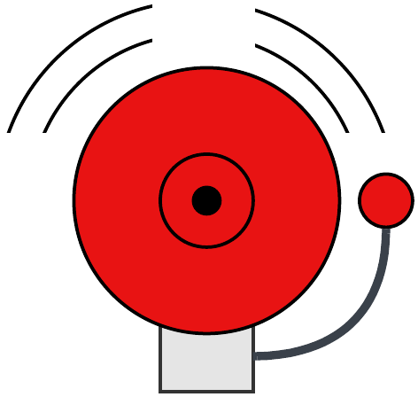

Rosetta is setup to make these sounds when certain conditions.
The Sounds and What Makes Them Happen
| Sound | Sounds when | Does not sound when | Can be Played On | ||
| Signal Tower | Monitor Speaker | Both | |||
| Fault siren
One steady, 3-second sound |
|
| ✅ | ✅ | ✅ |
| Done
Three short beeps |
|
| ✅ | ✅ | ✅ |
| Pause
Two short beeps |
|
| ✅ | ✅ | ✅ |
| Startup abort sound
Two short tones |
Startup File Check is set to Abort startup, or
|
Startup File Check is set to Warn, but let me continue, or
| ❌ | ✅ | ❌ |
Notes
| /home/reuben/linuxcnc/configs/Rosetta/gcode/ |
- This is due to these conditions for sounding an error are identified before LinuxCNC has started up and loaded the HAL; thusly, there is no ability to send a sound to the signal tower.
- The sound heard from the signal tower will typically be different from the sound heard on the monitor speaker. This is because there are options for changing the tone and/or harmonics on the monitor’s speaker, and these are not available on the signal tower (which is either on or off).
Configuring Sounds
The use of sounds with Rosetta is setup on the Inputs, Outputs, and Sounds tab in the Rosetta Settings program.
The startup abort sound is different - it is set by the Startup File Check choice on the Other tab instead, since it can happen before Rosetta Settings' other sound choices are even running.